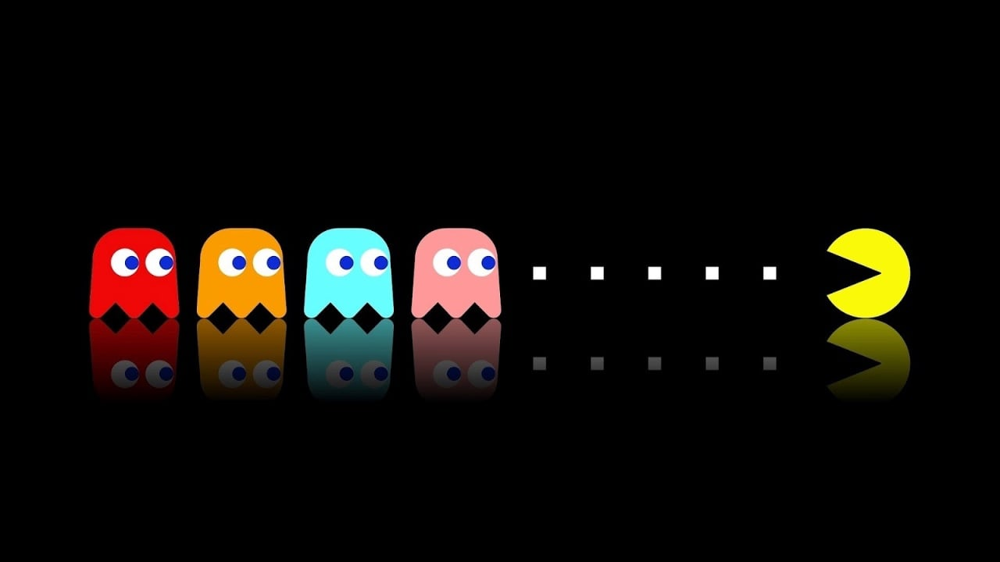
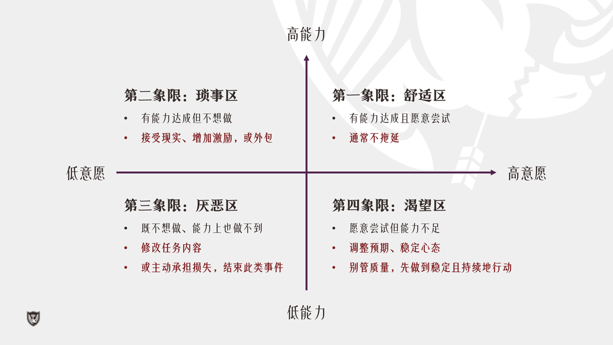
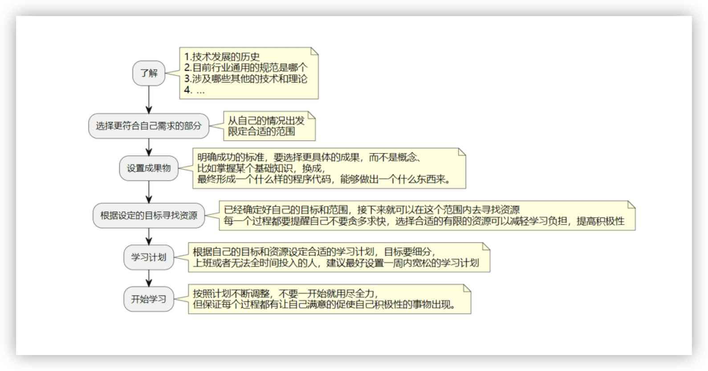
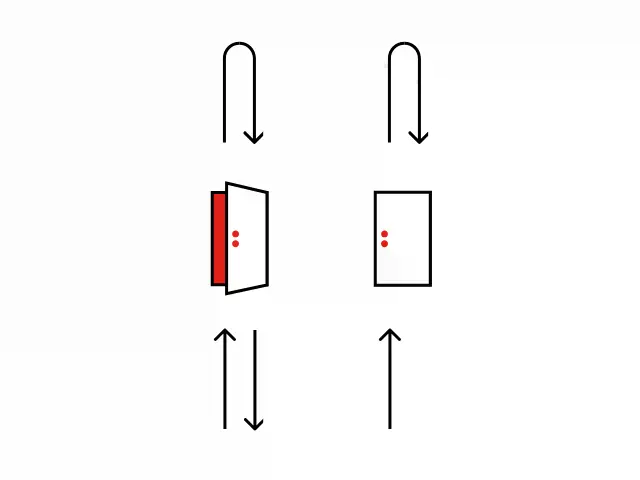

2023 年第四季度总结
这里记录下第一季度自己的一些想法，为了日后翻阅方便！
- 十月
- 哲学家的失眠
- 为什么写作
- 慢慢学会感动
- 自由的可贵
- 欧丽娟讲红楼梦
- 婚姻的意义
- 我为什么不叛逃写 Rust
- 自己对应生活的思考
- 十一月
- 人只有不完美值得歌颂
- 何为正义战争
- 生命的本质就是学习
- 如何打败拖延症
- 技术人员学习指南
- 普通人在 AI 时代应该如何应对
- 可逆决定和不可逆决定
- 十二月
- 文档第一 会议第二
- 一些鬼故事
十月
卧轨的火车 - 一些次要的时刻
因为 2022 年所有的主线都已经灭了，所以一定要发展一些副线，否则人就被毁灭了。在这种状况之下，才能感觉到人与人之间，那些毫无目的的善意和多余的那些情感。这些东西，反而成了你最珍贵的东西。
一 哲学家的失眠
思考生活背后的意义，要从现实中“觉醒”！- 链接
哲学家的失眠症：害怕入睡的原因是害怕永远不会从有限游戏的梦中醒来。当然，这是一种变相的对死亡的恐惧。每一种恐惧都是对死亡变相的恐惧。
害怕浑浑噩噩的人生，只是害怕死亡的另一种方式。 追求高效，追求健康，追求智慧，追求自我意识，说到底，只是对死亡变相的恐惧。
那么问题又来了，我们应该接受恐惧，还是战胜恐惧？我们应该继续昏睡，还是开始失眠？你觉得呢？
二 为什么写作
我们只能在生命未尽之时，继续追寻。- 链接
一位真正的作家永远只为内心写作，只有内心オ会真实地告诉他，他的自私、他的高尚是多么突出。内心让他真实地了解自己，一旦了解了自己也就了解了世界。很多年前我就明白了这个原则，可是要捍卫这个原则必须付出艰辛的劳动和长时期的痛苦，因为内心并非时时刻刻都是敞开的，它更多的时候倒是封闭起来，于是只有写作、不停地写作才能使内心敞开，才能使自己置身于发现之中，就像日出的光芒照亮了黑暗，灵感这时候才会突然来到。—— 余华在《活着》的自序里面这么说
在我的写作的过程中，我确实有同感。当我内心中有东西想抒发的时候，文字是自动喷涌而出的。在我们的生活中，我们不可能没有感受，好的也好坏的也罢，可以自由抒发的话，都是一种好事情。
三 慢慢学会感动
发现生活中的感动，让我们感受到生活的意义！
回首自己五年前、十年前、甚至二十年前，虽然那时候因为年纪轻，越显得稚嫩，但是我也感慨，那么激昂、那么慷慨、那么自信、那么不顾一切的自己去哪里了呢？
在解决现实的问题之前，对我而言，最大的问题总是找回自己。什么是我最喜欢的自己？什么是应该做的事情？是那个十一假期什么都没做，只是被捅了好几天核酸的我？还是那个相信世界仍旧可以被改变，希望满满的我？是对自己丧失了要求，默默活下去的我？还是可以不断折磨自己，希望探索到自己的极限的我？
堂吉柯德，不论多少次失败最终还是要去挑战风车巨人……
西西弗斯，只能不断地把石头推上山去……
夸父是否知道他永远追不到太阳……
我们只能在生命未尽之时，继续追寻……
四 自由的可贵
没有人生感悟是因为没有真正的生活！- 链接
汗！这一次次大筛我们小区都没有病例，封的是什么逻辑呢？为了卖菜？回头去看看价格如何。估计还要被关在小区里面很久。
不是说不活着，而是浑浑噩噩的活着，想不清楚目标是什么，为了什么活着。有时候早起测核酸，倒像是成了目标，测完以后往沙发一躺，今天貌似什么都不用干了。
其实我平时也是不下楼的，就窝在家里，经常 10-20 天完全都不下楼，但是，我想出去逛就能出去逛，现在则不然，只能在小区里面打转。自由果然可贵，不管是不是真的需求它，但是没有就会很痛苦。
这样的生活当然无所感悟，也没办法感悟。虽然我们都向往更好的生活，更自由，更丰富的生活。但是生活品质首先取决于心境，然而才取决于物质。如果能更积极的面对更美好的生活，才是真正美好的生活。
谁说人生还不是一场旅途呢？不管好坏，生活还是要继续……
五 欧丽娟讲红楼梦
当你拿着锤子时，看什么都像是钉子。- 链接
人格魅力是一种很玄的东西，放在学者身上，这种魅力就是当你潜下心去治学，并把你的思考所得分享出来，你在讲述的时候眼睛里是闪着光的。
围绕红楼梦，老师从熟悉的事物出发，寻找理论的陌生感，散得开也收得拢。在视频中，阿德勒的个体心理学与诗词相互交融，大观，王道与神话并行不悖。诠释文本的支撑材料选择也很有意思，学者需要提出自己观点，但又不能有过强的自我意识，后者会让文本诠释变成“六经注我”的自我娱乐：当你拿着锤子时，看什么都像是钉子。所以需要有主见也要有自我约束，文学和哲学一样，都不是在简单的重复和学舌，而是试图通过留下的文字线索进行作者思维方式的模拟，我明白你的观点形成过程，进一步决定了我是否要接受你的观点或者采纳某种思维方式。
六 婚姻的意义
婚姻是甜蜜的海洋并不是自由的坟墓！- 链接
结婚是一件非常花费心思的事情，牵扯了上百人的精力，来完成一件非常有趣的事情。为什么越来越爱了，为什么结婚很久还是和初恋一样，就是因为一起经历的太多，导致彼此更加珍惜对方。
一场婚礼是非常耗费精力的事情，涉及到两大家族长时间的准备。一个家族内部之间的矛盾可能在这个过程被激发出来，鸡毛蒜皮的事情可能会导致出来一些纷争，牵扯出很久时间之前的恩怨；两个家族之间的价值观也会受到考验。事后来看，有些人之间的感情会更好，因为一起经历过了这件大事，有些人的感情可能会变差——由于有些地方事情办得不好。
家庭和亲戚们不是人能选择的，所以协调这样一个团队去完成一个大项目，本身就是一件很复杂的事情。
婚礼涉及的事情太多了，双方家庭一定会有在某些事情上不一致的地方，这对两个家庭的结合来说就是考验，对小夫妻也是考验，看能否协调好双方家庭。刚办完婚礼的我觉得如果婚礼能和谐地办好，那么以后幸福过日子不成问题。
婚礼看似费神费力，我的心态是，抱着享受过程的心态去准备每一件事，去体验。是一个和自己的兄弟们加深感情的机会（得请大家帮忙，团队合作），是一个双发家庭融合的机会，是一个考验小夫妻和双方父母三观的机会，也是你去认识对方家庭成员的机会，更是一个和自己的妻子加深感情的机会。
七 我为什么不叛逃写 Rust
浅浅的解释下我为什么不叛逃写 Rust - 提及链接
很多同学在留言中都好奇我为什么不叛逃写 Rust？哈哈，浅聊几句。其实我算是深入学习 Rust 比 Go 早，我早年不喜欢 Go 觉得它非常平庸(现在也这么觉得），在前司时我其实更期待平台能够支持写 Rust 而不是 G0。
Rust 的语言特点会决定它的开发者相对非常小众，未来也不会流行。Go 可以说是 Python 的平替，但是 Rust 品然门栏高了一大截，但是对我来说语言特点只是考虑的一个方面，我看好它但是不会作为主力，我更关注语言的生态（或者说市场)，另外可以看一下国内这几年的 RustConf 主题，可以看到它的路还很远：当然也可能和我职业发展规划关联不大。
对，我比较现实，在企业中如果不是高层有对应背景或者业务特点，Rust 是很难被作为核心或者说推荐的语言，因为门栏就是主要因素之一，资深 Go 开发者好找，Rust 开发者可遇不可求。现阶段我只能保持关注，让我「叛逃」可能还得几年~
不过我不反对大家赌 Rust。在之前提的毛剑老师的「技术人如何在多重角色中游刃有余」采访里面也表达过，新语言是有很多红利的，而选择一个过去的语言，你是很难和那些本来就有很多年积累的开发者竞争的，因为新语言出现的晚，还没有专家，有很多机会可以开疆拓土，把其他语言的东西改成 Rust 就是一个常见的方式，更早的在这个领域获得认可，这个就是选择比努力重要，如果赌对了，那前途比在一个早就被占完坑的语言里耕耘来的实际。
你们看我写 Python 十多年，其实相对的也可以说我占了 Python 语言红利(选择了坚持深入），而 Python 在过去那几年确实是越来越好的（但是最终社区自己不争气），所以就会更容易有名气，而同样我要是一个资深的 C、Java 开发者。
可能就不容易这么有名气了，而现在各位即便从现在开始在 Rust 领域能够非常深入，也来得及，饭碗虽然没有 Go 的多，但是抢的人也很少啊，依然是非常有前景的。不过这个是有赌的成分的，毕竟是几年时间，各位谨慎。
八 自己对应生活的思考
面对生活，思考生活，改变生活。- 链接
- 职场
你有没有意识到，上班本来就是痛苦无聊的，不然付你钱干嘛？ 但是，不要只是为了钱，而放弃自己的身体，不然就得不尝试了。
如何平衡工作和生活？答案是平衡不了。时间的单向性，决定了时间的唯一性。 你可以一边唱歌一边跳舞，也可以享受工作而乐在其中，但你不能同时又在工位又在床上。在工作和生活无法互相等于对方的情况下，必然需要舍其一而划分优先级。
每个人都应该有几个吃饭搭子，以减轻上班的疼痛。 但如果没有也没关系，他们是萍水相逢的同事，这里叫暂时待着的环境，总有一天你会离开这里。
上班和谈恋爱一样，分手见人品。 好在运气不会次次都差，努力工作，精进本领，真诚待人，然后等待好运降临。花主要精力去关注、增强自己做起来比别人更容易的事情，学习自己做起来不太费力且对自己优势有补充的事情，放弃或者低成本做自己特别费劲的事情。 不要作无效上进状。
我坚持认为每个人都应该有一个自己的副业，跟主业分开。短期内副业并不需要赚钱，但它非常重要。它不仅有机会为你带来额外收入，还能带给你良好的感觉：我的工作，除了赚取薪水，还有别的意义；假设有一天没有工资，我也可以生活。
- 生活
如果赚钱没有带来更好的生活，那么努力毫无意义。 尽管花时间和钱去投资自己，别做无聊的人，活得漂亮些。保持好奇心和探索精神，敢于冒险，追求美，包括无用之美。
好看是重要的，做个好看的人，精精神神就是好看。年轻的时候都没好看过，那真不知道活着图个什么劲儿了。你得去户外，跑起来，靠身体搞点多巴胺内啡肽，一动起来你就知道电子屏是多么的单调，沙发真的放不下你，我们生来不属于什么地方，心要野。 人生的意义和那些突然击中你的重大灵感，大部分都在玩儿的时间里。出去玩儿，走出去，枯坐是没用的。有意思就是有意义。
我知道你很累，你除了躺在床上刷一个个的短视频没有别的力气了，因为我也一样。但如果有力气刷短视频，就有力气把短视频换成长文章，把手机换成书，因为我也一样。我不是要告诉你每天多看会儿书能改变人生，因为那并不会发生。但最起码，不要在垃圾堆里找东西吃。
- 健康
要明白好时光有限，学会贪生怕死。不可再生资源悠着点用，比如你的牙齿，眼睛，你的腰背，肩颈。 良好习惯要从步入职场就开始培养，干了伏案的工作，就要知道这活儿会落下哪种类型的职业病。又能把职业干好，又能没有职业病，是很牛逼的事情，很少有人能做到。做个牛逼的人。
人总是很难意识到自己的心理疾病，直到承受的心理压力最后通过身体的疾病表现出来。日常多去问自己当下是否快乐，而不是不断反思自己的表现能打几分。老实说，时至今日我对这个世界仍然有很多的问题，不过知道自己正走在正确的路上，那一切都没有什么好担心。
遇到解决不了的问题，也可以先去睡觉的。要知道，如果能拥有一晚充足的好睡眠，在这一天里就已经超过了世界上 90%的人。
运动带来的快乐，实在是太快乐了。你要知道，人类也是哺乳动物，是激素的奴隶。运动，分泌多巴胺，分泌内啡肽，天然带给你快乐。多锻炼，主动把心率提起来。学会操纵自己的肉身，调节自己的情绪，做个理性的人，人正因有理性而能跟动物区别开来。
饿了就吃，冷了就穿，腻了就换。 吃的是这样，衣服是这样，工作是这样。就这么简单。
- 人际
活了这么大，在真诚待人的基础上，需要有一些见人说人话、见鬼说鬼话、见狗蹲下来说话的本领。为着实现自己的目标，为着不困扰别人，你需要努力做一个八面玲珑的人。
向帮你的人表达感谢，记住人家的好。每个家伙都需要爱，你也不例外，他也不例外。勇敢给予，大胆表达，「给」永远比「拿」愉快。
遇到问题别怕丢人，跟朋友们倾诉，问他们建议。任何一个真正的人都不会因着对方展露真心而嘲讽他。人这辈子亲密朋友就那几个，这个世界上真心不多了。
十一月
没人在乎
当你离开学校，踏入社会，就会发现没人在乎你。没有人关心你是谁、你知道什么、你在做什么。每个人都忙于自己的生活，他们的注意力都在自己那里。
你唱了世界上最烂的歌？没人在乎。你花了两年时间写小说？没人在乎。你开发了一个出色的软件，解决了一个大问题？没人在乎。这就是推销的用武之地了。
当你意识到，社会上的人们不会像你的父母那样关注你，你就会明白，推销是一种合理的行为。没有推销，别人不会关注到你。推销自己的产品是你的职责，让别人在乎你是你自己要解决的问题。

一 人只有不完美值得歌颂
为什么自比鲁迅的让我觉得不像，王小波门下走狗我也觉得不好。 - 链接
我觉得一个牛逼的人，一定是个人，一定是个有缺陷的人。这才真实。也有挣扎，也有痛苦，也有错误的时候，也有心胸狭隘的时候。所以，人需要自省，人会犯错误，也需要承认错误。才能成为一个人。
好的作家，思想家，往往都比普通人更敏感，我们觉得司空见惯的东西，他们往往会体会出更多的意涵，有更多的联想。这是一种祝福，也是一种诅咒，所以，他们也会有他们的痛苦，自省不仅带来的是自我的提升，也会带来自我和现实的疏离感，有很多现实存在的问题无法解决带来的无力感。
一切完美的，一切没有错误的，一切不知道反省的，只能让我怀疑。
二 何为正义战争
三条基本原则也不能够完全回答我们关于正义战争的所有的问题
对一个普通人而言，衡量战争的正邪往往是一件更加困难的事情，因为交战的各方往往都会开动其巨大的国家机器，通过外交、媒体和选择性的信息投放，为自己的战争做道德辩护。但是面对强大的国家宣传机器，个人也并不是只能作为被动的应声虫而已。
- 原则一：正义的目的
在二战前的旧秩序当中，任何国家都可以以任何的正义之名宣战，这其实是一个鼓励和包容弱肉强食的世界。两次世界大战，其实正是这种逻辑的自然结果。经过了两次世界大战的惨烈教训，走向了一种新的秩序。新的秩序只允许两种正义的战争，一种是自卫，另外一种是有联合国授权的人道主义救援战。
新的战争秩序的最根本的逻辑就是和平，但是各种各样的道德疑团仍然存在。对于这些问题，我们可以进一步诉诸另外两条关于正义战争的基本原则来思考。
- 原则二：相称性
相称性，战争所实现的正面价值，应该要超过它将导致的负面结果。在一次自卫战里，我们要付出的是什么，我们真正捍卫的又是什么，国家主权在人民的自由与幸福之外有什么价值。
- 原则三：必要性
必要性，只有在没有比战争危害更小的方式来实现正义的时候，我们才可以诉诸于战争。如果从必要性的角度去思考，一场连对方入侵意图都还没有的预防战，我们不禁会去问，这样的战争真的是必要的吗？
在历史的洪流中，我们每个人的力量都只是一粒沙，但是聚沙成塔改变历史洪流的故事，在人类历史上从来也都不缺乏。即便在某一个特定的时刻，我们作为沙尘的力量不足以改变历史前进的方向，但作为一粒会思考的、有行动能力的沙子，表达自己通过理性思考获得的判断，本身就是我们作为一粒沙的尊严。
三 生命的本质就是学习
李安： “坚持梦想”不是可以鼓励的事情。
最近看了李安在 B 站的一个采访合集，导演说：
我觉得“坚持梦想”不是可以鼓励的事情。我真的凭良心讲，一个人会坚持的他本来就会坚持。不能坚持的人，一点小挫折，或者一点不如意，或者不理想的，他可能就不做了，即使鼓励到某一种程度也很小。我觉得坚持很多时候是天生的，很难靠个人毅力。讲起来有点玄的，有种宿命感：你是不是做这一行的，是不是吃这行饭的？至少对我的感觉来讲，好像有一点宿命。
李安还有一句话，我认为生命的本质就是学习。
人就是活到老，学到老。其实没有什么成长期、中年期，人就是一直去适应，一直去学习。当你学习能力衰退的时候，还要尽全力学习，生命的本质就是学习。
四 如何打败拖延症
别纠结艾森豪威尔矩阵啦，更为有效的方法是，参考「能力-意愿」模型。- 链接
一番琢磨过后，我发现影响行动积极性的因素主要有俩：
- 任务的完成难度
- 此事是否超出了我的能力范围
- 写出一系列火爆全网的文章，篇篇阅读量百万加
- 执行的有趣程度
- 是否出资自己意愿和兴趣出发
- 讨厌洗碗，洗了又脏、脏了再洗，循环往复没个尽头
增强行动力的方式主要有俩：增加激励以提升行动意愿，提升个人能力以降低完成难度。前者可在短期内做到，后者则通常需要持久地努力。
- 第一象限：舒适区 - 有能力达成且愿意尝试
- 比如说拿着充足的预算为公司采购电脑
- 反正不用考虑性价比，顺带还能升级自己的设备，何乐不为
- 第二象限：琐事区 - 有能力达成但不想做
- 比如说帮同事复印文件、修改 PPT 格式、归档资料等操作简单
- 高频占用个人工作时间、对项目产出也没啥直接帮助的事务
- 第三象限：厌恶区 - 既不想做、能力上也做不到
- 比如说盗取公司的核心数据，再把它高价卖给竞争对手
- 从法律和道德层面皆不可行，即有这贼心也不同意做到
- 第四象限：渴望区 - 愿意尝试但能力不足
- 比如说取代上级成为团队管理者，挣到翻几倍的薪水
- 愿景很美好，目标也明确，无奈实力不允许

对于想做但暂时做不到的事情，不如先放低要求，别管成果好坏，做到能稳定且持续地行动再说。毕竟，量变引发质变嘛。对于不想做且做不到的事：不妨问自己“如果不做，会有啥后果？该后果是我可以承受的吗？” 如果可以，那么不如通过主动承担损失来结束此类事件吧。
五 技术人员学习指南
《学习力》- 链接
通常我去学习一个技术都是工作需要，但我希望自己对这些技术有更深入的认识。学习一个技术的原因第一是出于需要，需要用于当前的工作，需要了解行业或者其他。第二是防止被忽悠，当你大概了解一门技术的时候，你就不会被轻易忽悠。

- 历史发展
了解一个技术的发展历史和行业现状，短期之内没什么帮助，但是这其中隐藏着一个信息差的概念，对长期的发展有没有帮助，是否值得我们学习。
| 历史 | 行业 | 业务 |
| 过去 | 过去哪些行业中用到？ | 当时行业内部流通的版本是多少？标准是什么？ |
| 现在 | 目前大家使用的行业是哪里？和过去对比有没有变化？我所在的行业中是什么样的情况？ | 现在的标准、版本都是多少？ |
| 将来 | 有没有人对这个技术的未来做出预测？将来这东西还有人用么？ | 未来会不会推出新的版本？会不会再有更新维护？ |
- 选择符合自己需求的部分
针对行业和业务锁定自己的需求，也是从自己所处的行业和业务范围去确定自己的需求。并且限定一个合适的范围，不要在超出范围的事情上浪费时间。
- 设定成果物
在设定我们的成果物的时候，我们要制造/创造出某个东西，比如我要学会做饭这个技能，就将成果物列为，自己能够做出一道番茄炒蛋，而不是熟悉鸡蛋的内部结构，掌握锅碗瓢盆的使用方式。
- 根据设定的目标寻找资源
已经确定了成果物，也知道要掌握的范围是什么，就可以着手寻找一些资源。查找资料同样是一门学问，要牢记不要贪多，不断精简留下 1~2 个教程就行，因为到中后期你会发现你连一个教程都很难坚持。
- 学习计划
定学习计划的原则就是，不要贪多，没错，还是这个。不要给每天密密麻麻的设定好多，计划完成却耗尽激情，接下来的计划也懒得实行，计划没完成就给自己盖章为“废物点心”。
按周设计计划 是一个合适的方案，最好不要强迫自己在劳累了一整天之后坐在书桌前全神贯注的学习，尽量早晨早点起，留出 30min 学习也好，周末划分一个大块时间学习。晚上感觉很好，就多学一些，感觉很累，就休息一下。每周完成自己的周计划或者每个月完成就好，防止自己因为计划没完成而落入“废物陷阱”，自我感觉太差会影响下面的学习计划。
适当的 强迫自己放下电子设备，或者先做个五分钟，坚持一小段时间在休息，告诉自己五分钟也是学习，一秒钟都算进步。不想学的时候，告诉自己，先分解目标，不需要直接开始学习，当你打开章节内容，划分做策略之后，就会发现想学的欲望上涨了，说不定可以立刻开始学习。
细化目标和步骤是老生常谈了，经常设置自己的学习计划的人都应该知道，但是细化目标到什么程度不好把握，这里面的一个技巧是，根据自己的完成时间来限制，比如十五分钟以内，十分钟以内，五分钟以内的算是一个步骤，按照自己的习惯来细化目标，分解步骤。设定学习计划里面有太多的坑要避了，但是设定一个合适的学习计划又特别重要。
- 开始着手
伴随着深入的学习，你需要不断地调整自己的学习计划，因为兴致好的时候会多学一点，兴致差的时候懒得动手，会拖延一点，其实没兴趣了随时放弃也无所谓，尝试过发现自己不喜欢也有意义。
六 普通人在 AI 时代应该如何应对
努力学习，紧跟潮流。- 链接
面对 AI 时代给我们工作和生活带来的转变，下面是一些具体的、实用的建议，以帮助我们每一个人更好地适应和把握这一时代：
- 持续学习与技能更新：专注于掌握和提高那些
AI难以替代的技能，如创造性思维、情感智慧和战略规划。同时，利用各种在线资源和平台不断加深对AI本身的理解和应用。 - 多元化能力与跨领域学习：不要局限于单一的领域或技能，而应培养跨学科的知识结构和解决问题的能力。这不仅能够提高个人的适应性，还能够在不同领域之间建立连接，发现新的机会。
- 建立人际网络与共同学习体：通过与志同道合的人建立联系，不仅可以获得支持和鼓励，还可以共享资源和经验。在学习和适应过程中，一个良好的社交网络是不可或缺的。
- 保持好奇心与开放心态：在技术不断进步的今天，拥有探索的热情和对新鲜事物的好奇心比以往更为重要。让好奇心引导你的学习方向，也让开放心态帮助你接受新的思想和方法。
- 身心健康与自我关怀：不要忘记身体和心灵的需求。确保有足够的休息和放松，同时培养一些非技术性的爱好和兴趣，以维持生活的平衡。
- 面对不确定性保持谦逊：在这个不断变化的世界，没有人能够预知未来。因此，保持谦逊的态度，不断学习，是对待不确定性最好的方式。
通过这些策略的实施，我们能够在 AI 时代中找到自我提升和发展的机会，而不是被技术的浪潮所吞没。
- 在瞬息万变的 AI 时代中寻找定位
在这篇文章的最后，我希望大家都能够认识到，在 AI 时代中个人的探索和适应是一场既激动人心又富有挑战性的旅程。ChatGPT 的新功能无疑增加了我们面临的挑战，同时也为我们带来了未知的机遇。让我们以开放的心态、持续的学习、跨领域的探索以及身体和心灵的平衡，迎接这个充满变化的新世界。
无论是作为开发者，还是作为父亲、母亲、朋友或者是一名终身求知者，每一个时刻我们都在塑造自我与 AI 的关系。我相信，如果我们积极拥抱变革，不断提升自己，未来将是充满可能性的。就像那些程序代码能够编织出令人惊叹的软件产品一样，我们的生命亦能在这个多彩的 AI 时代中织出精彩绝伦的人生篇章。
七 可逆决定和不可逆决定
不可逆决定，是很难改变的。- 链接
做决定的时候，你可以做两种决定。一种是不可逆决定，它就像一扇单向门，你穿过了就不能回来了。另一种是可逆决定，就像双向门，穿过了还可以再回来。

怎么区分它们呢？
你可以看撤销成本。撤消成本越高，决定就越不可逆；撤销成本越低，决定就越可逆。
这里的窍门是，可逆决定要快，不可逆决定要晚。 当决定是可逆的，就要快速做决定。最大的风险是拖拖拉拉、犹豫不决。当决定是不可逆的，就要放慢速度，设法获取更多的决策信息。最大的风险是做出错误的决定。
亚马逊的老板贝佐斯认为，不可逆决定如果有 70% 的把握能确定结果，就是采取行动的时候。如果不那么有把握，那就不妨再观察一下。
总之，可逆决定的最大风险是拖到了最后一分钟，不可逆决定的最大风险是在真正需要决策的时刻来临之前就做出决定。
十二月
好奇心，是多么的重要！
好奇心能激发人们对于知识和真理的渴求，无论是对于硬件、开源软件、编程、组装个人电脑、优化系统设置，还是只是学习使用一个新软件。
谚语说好奇心害死猫。我讨厌这个谚语，因为它被家长、学校、见识短浅的老板、老师和那些不想被我们这种好奇宝宝干扰的人用得太多了。事实上，好奇心激发了对于人们对于知识和真理的渴求。这可能是关于硬件、开源软件、编程、组装个人电脑、优化系统设置或者学习使用新软件。满足你的好奇心吧!
一 文档第一 会议第二
很多人，总是做得少，却说得多。 - 链接
“开会文化”对公司是有害的，创业公司尤其要避免大量的会议。
创业公司应该少开会，多写文档。文档第一，会议第二。
- 创业公司争分夺秒，会议非常浪费时间。当然，并非所有的会议都是不必要的，但是原则上，会议应该尽量不开，参加人员也应该尽量精简。
- 不断开会恰恰表明一个更深层次的问题：缺乏清晰、可访问和可靠的文档。如果每个流程都有文档，就不需要一个小时的会议来澄清。如果每个决定都有文档，就不需要满屋子的人来理解它的理由。如果每个团队都有文档，就不需要在新成员加入团队时进行小组讨论。
- 会议创造了生产力的幻觉。你以为，开会提高了生产力，实际上它们正在阻碍它。每一次不必要的会议都是一种浪费。那些时间本可以用来改进算法，哪怕用来学习或者休息也很好啊。从本质上看，减少会议不仅仅可以节省时间，还可以让大家更专注、更多创新和创造，这恰恰是创业公司的命脉。
- 会议往往会自动膨胀。你召集了半小时的会议，快速讨论一个小问题。结果，在会议中发现一个意想不到的问题非常重要，你们的争论就一口气持续了两个小时。
- 会议不容易确定细节。你提到了一些别的事情，或者说话含糊不清，再或者双方沟通不畅，会议就会变得不那么清晰。解决方法到头来还是要写下来。
- 会议往往偏向声音最大的人，而不一定偏向那些有最好想法的人。这会扼杀创新和思想的多样性。作为对比，文档提供了公平的竞争环境，每个团队成员都可以表达他们的想法和见解，它促进了一种深思熟虑和反思的文化，而不是草率的判断和冲动的决定。
- 结论：你的时间和资源最好花在记录上，而不是花在会议上。大多数会议很容易被一份精心起草的、提供相关数据和建议、并征求反馈意见的文件所取代。
二 一些鬼故事
不要害怕失败，不要害怕失败，不要害怕失败。 - 链接
年底了，大公司事故不断，颇有放个烟花给老板看的节日喜庆气氛。公众号们也没闲着，纷纷借题发挥来帮大公司出谋划策，解决问题，顺便夹带一些私货，可以看出经济下行，大家朝不保夕，难免怨气都很大。
降本增效的背景下，事故频发是必然的，都讲勿在浮沙筑高台，可惜处处是浮沙。正好有些鬼故事，可以给读者分享一下，帮助大家未来在做职业选择和技术决策的时候有个准确的参考。
- 长期主义
当前互联网公司的员工平均在职时间普遍在 2 年以内，按照各公司每年 20% 左右的晋升比例，意味着 80% 的人会经历晋升失败，这 80% 去参加晋升的人呢，大部分随后就会离职。当然现在行情不行了，也可能会跳不太动。
职业生涯的前几年，我也挺坚持长期主义，希望能够在一家公司深耕，能做出一些说出去能让业界同仁抖一抖的大系统。并且也用这些来教育那些刚毕业的同学们，希望他们坚持学习和思考那些难的东西，而不是浮于表面的八股文。当然，得到的回应是“面试又不考这个，我为什么要学”。
从结果上来讲，即使个人做到了长期坚持，但也没什么用。
当你用这些来证明自己的时候，你的面试官是个两三年跳一次槽的人，你讲的东西他未必听得懂。为了照顾他的情绪，你往简单了讲，别人大概就觉得“就这”？给你扣上个技术深度不够的帽子来压薪资。
这个世界，有些事情明明大多数人做不到，但是你做到了，他就会觉得很简单。所以那些坚持者往往还不如那些投机者赚得多。反过头来还要被弱鸡评头论足。
- 事故
我个人其实很喜欢事故，从事技术工种，事故对于工程师来说是很好的学习机会，对于个人来说，事故也是锻炼你的辩证思维的极好的机会。
可惜事故在公司里却都是拿来批斗他人的工具。就事论事在这个圈子里已经变得如此之难，以至于每次有事故，复盘会的目的都是把事故关联方批倒批臭，给自己的职业发展和地盘游戏争夺更多空间。
在大公司工作时，常年莫名其妙的复盘时常让人觉得我们这个行业为什么变成了这样，想要做技术创新和业务创新，至少要鼓励一定程度的失败，再通过失败来找到改进的方向。就像最近 spacex 发射火箭后英文媒体都说成功，而中文媒体都说是失败，就可以看出这种微秒的差异，非常有意思。
这是文化问题吗，我也不知道。
现在很多纯技术人员也被乱七八糟的价值观污染，连基本的就事论事都做不到，拿着给一线销售洗脑的价值观大做文章，多么可笑，一起开复盘会的时候大片的时间在强调价值观，心诚了系统就稳了？
我们每次上线都去烧香拜佛好了，还做啥保障。
- 预防
我们可以做很多事情来预防事故的发生，但即使做了，也没有用，因为一个商业机构，不可能对没有在自己身上发生过的事情提起重视。
比如支付宝的光纤被挖断了，才有了后来的各种断网演练。其它没有被迫断过网的公司会这么做么？未必吧。直到同样的故障降临到他们头上才行。
死到临头方知悔，不见黄河不掉泪。
互联网公司的系统基本都是复杂的分布式系统，里面充满了各种奇奇怪怪的中间件，共同依赖，单点存储，流量瓶颈，低频崩溃路径。每一个都需要有更多的旁路系统去保证在异常来临时不出问题。这和建大坝差不多，如果一直没碰到洪水，那就是劳民伤财；如果碰到了，那就是功在千秋。但你可能活不到洪水来的那一天，就被人送上断头台了。
哪怕公司里专门摆一个业务稳定性团队来当领导的安慰剂，你也会发现因为公司的晋升制度安排问题，他们更喜欢挑选那些看起来特别底层的事情，而不是对稳定性本身最有益的事情来做。
这个是制度问题。
- 尾气
互联网的发展显然已经进入了尾声，新入行的人能分到的只剩汤了。一边吸着尾气，可能还要被那些不干活，不思考，不退休，站着说话不腰痛的人指责没有奋斗精神。对于后来者是不公平的。作为一个过来人，我的建议也只有两条：
- 无论什么时候，都选择给你钱最多的地方；
- 先有钱，再去谈理想和长期主义；
- 软件架构里有个概念叫
Leave Options Open，你的职业和人生选择也应如此；